Real-time Protection Policies
The policy framework allows admins to match against CCL and custom tags, supports multiple DLP profiles, supports an action per DLP profile, and set Traffic Action when a profile does not match.
To watch a video about the new Real-time Protection policy workflow, click play.
To get started, go to: Policies > Real-time Protection.
This pages shows:
Name of each policy.
The source (traffic criteria) for the policy.
The apps each policy monitors.
The profile applied to each policy.
The current action applied to each policy.
The number of alerts triggered for each policy in the last 30 days.
For a more detailed view of each policy, click the name of the policy.
Policy details provide information about:
Traffic Criteria: Traffic Criteria are sorted into 'Source' and 'Destination.' Netskope will show the most appropriate criteria based on your policy template selection.
Profile and Action: The action is performed when the traffic criteria and profile are both matched.
Additional menu options for editing a policy
You can edit the policy by clicking the three dots to the far right of the policy name. A menu opens that enables you to edit, view alerts, move policies, revert, disable, clone, and delete policies.
 |
Searching for a policy
You can search for a specific policy by typing the name in the search box. The policies that match closely to your search text are filtered in the Policies list. Optionally, you can select the Show Matched Policies Only checkbox which further filters your policy list to display only the policies that precisely match your search text.
The Real-time Protection Policies page also allows you to use search filters to find policies for specific users, apps, and websites.
To use the search filters, click + Add Filter to apply one or more of these filters:
User: Find policies that detect specific users.
User Group: Find policies that detect specific user groups.
Organization Unit: Find policies that detect specific organizational units.
Profile Type: Find policies with DLP, Threat Protection, IPS, or no associated profile.
Continue Policy Evaluation: Find policies with the “Continue policy evaluation after match” option enabled or disabled.
DLP Profile Name: Find policies that use certain DLP rules, like PCI, PII, PHI or any DLP profile.
Action: Find policies that take a certain action, like block or encrypt.
Network Location: Look up and filter by a specific or multiple network location(s).
Source Country: Look up and filter by a specific or multiple source country(ies).
OS: Find policies that detect specific operating systems.
Browsers: Find policies that detect specific browsers.
Access Method: Find policies that detect specific types of access, like explicit or reverse proxy, GRE, or IPSec.
Device Classification: Find policies that detect managed or unmanaged devices.
Application: Look up and filter by a specific application.
Activities: Find policies that track specific activities like downloads and uploads.
Category: Find policies that detect specific cloud application and website categories.
Destination Country: Look up and filter by one or more destination country(ies).
The Real-time Protection Policies list page by default displays 150 rows. To change your view, select the option from the bottom right of the page (options include: 25, 50, 100, 150).
You can view the list page in compact table view (default) or detail table view. From the detail table view, you can customize the columns or restore the default view. To access the Customize Columns window, click the gear in the upper right corner of the table.
 |
Create a Real-time Protection Policy
Policies are defined using a set of variables. These variables define the criteria for detecting policy violations.
For descriptions for each of the variables used, refer to Real-time ProtectionPolicy Variables.
To create a Real-time Protection policy:
Note
When you see a text box during the policy workflow, click in the text box to view your additional options or to edit your selection(s). These options dynamically display based on your initial template choice. Many criteria are set to ‘Any’ by default. This means the policy engine will not match against the criteria.
When available, click Add Criteria to see what other match criteria are supported. Add more criteria to your policy to make it more specific.
Optionally, click the 'X' to the far right of the text box to remove a criteria.
On the Real-time Protection Policies page, click New Policy. When creating a new policy, select a template that most resembles your goal. You can choose a DLP or Threat Protection, or an access control type policy template: Cloud App Access, Web Access, or Private App Access. No matter the choice, you can edit as you work through the policy creation workflow. Choosing a template means some fields are auto-populated for efficiency.

Select the Source. Click in the text box to select users, user groups, organizational units, or Unknown (all unauthenticated users). Traffic Criteria is sorted as 'Source' and 'Destination.' The system will show the most appropriate criteria based on your policy template selection. Many criteria are set to 'Any' by default. This means the policy engine will not match against the criteria.
Tip
For users that are unknown or were not authenticated for any reason, create a policy specifically for “unknown” users and extend threat and DLP protection to unauthenticated users.
This applies to:
all GRE/IPSEC and CEP access methods
when SAML auth is not configured
unknown cookie surrogates traffic
For cookie surrogate traffic, Netskope can ingest and apply policies to unknown user traffic. Previously, unknown traffic was bypassed.
In addition, the Skope IT Events user field displays "unknown" to reflect unknown traffic. If this feature is not enabled, the user field displays "IP Address".
Contact Support to enable this feature in your account. To learn more: Cookie Surrogate
Optionally, click + EXCLUSIONS to select users, user groups, organization units, or unknown users that you want to exclude from the policy. If you choose to include a user in the policy, but exclude a user group that the user belongs to, then the user is excluded from the policy.
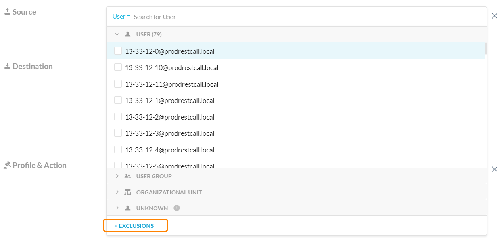Note
This feature is in Controlled GA. If you want to enable this feature, contact your sales team.
Optionally, click Add Criteria to see what other match criteria are supported. Add more criteria to your policy to make it more specific.
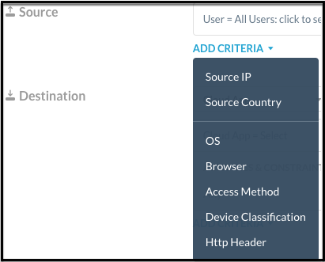For Destination, click the dropdown to switch among App (Public or Private), Category, and Instance. These options allow you to write a specific policy against a few applications, categories, or instances, or a generic policy against any traffic.
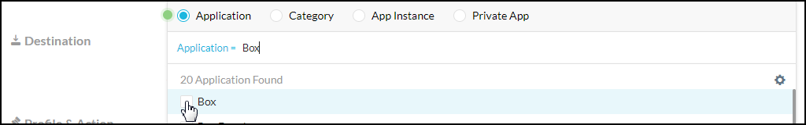 Optionally, select Activities and Constraints. After selecting an app, you can further narrow your policy by selecting specific activities and constraints. The Activities list is the union of activities supported by the app or categories you select. It's possible not all activities are supported by all of your selected apps, categories, and object types.
Note
As part of file activity, a user can add a comment to a file in Microsoft Office 365 OneDrive. In OneDrive account, hover over a file and click See details > Activity. In Netskope, this activity translates to a post. Microsoft allows commenting for non-Microsoft Office file types only like .zip, .pdf, .txt, .png, .pem, and more. Netskope reports post activity for such file types. However, Microsoft does not allow commenting for .docx, xlsx, and .pptx file types. Due to this limitation from Microsoft, Netskope does not report post activity for such file types.

Click the Activities icon > View activity support link to open the Activity Support dialog.
This dialog shows the app or category you've selected and the available activities. This is informational only.

Tip
Admins can configure a policy with a combination of different Activity Constraints. Contact Support to enable this feature in your account.
To learn more: File Type Detection
You can add Destination criteria. The system will show the most appropriate criteria. Options below may vary:
- Cloud App - select a single cloud app or a cloud app suite, e.g. AWS, Microsoft Live, etc. To learn more: Cloud App Suite Membership
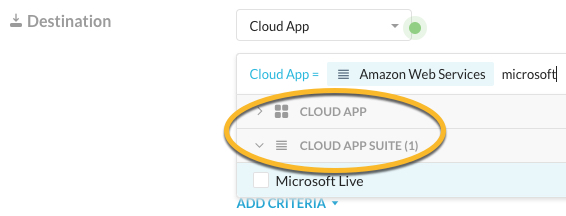- Category - select from All Categories, Predefined Categories, or Custom Categories
- App Instance
- Any Web Traffic
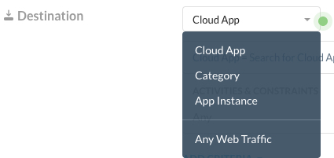- App Tag - only available if Any Web Traffic or Category is selected for Destination
- App Instance Tag - only available if Any Web Traffic, Category, or Cloud App is selected for Destination. There are two predefined app instance tags: Sanctioned and Unsanctioned. The Untagged option matches app instances that Netskope identified but are not yet tagged.
- CCL - can only be used when Category is selected for Destination
- Destination Country - select a destination country that either matches or does not match.
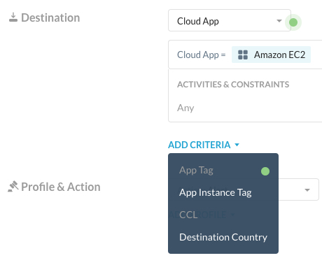Select a Profile and Action. Click in the text box to view your other options. To perform additional content inspection on the traffic, add a profile. The action you specify in this step is performed when the traffic criteria and profile are both matched.
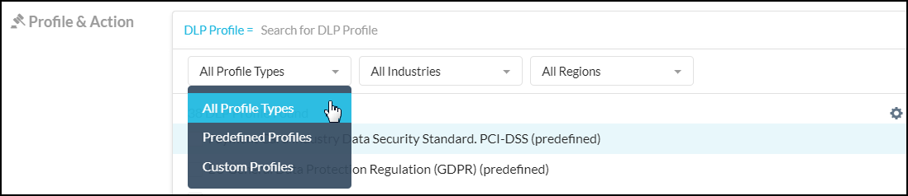 Select the action you would like to take, like Alert, Block, Quarantine, Forward to Proxy, and so on. Some actions allow you to choose a default template for the notification sent to the user when the policy detects a violation.
Tip
Alert events are not generated for Real-time Protection Policies with the "Alert" action selected for "Browse" activity.
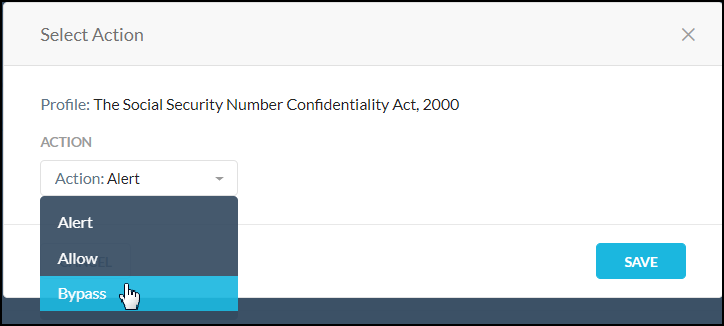 Optionally, if you're configuring a Threat Protection policy and chose a Block action, you can see the Block till benign verdict by dynamic threat analysis option. Select to block users from uploading or downloading a file until Netskope dynamic threat analysis provides a benign verdict. The analysis can take up to 10 minutes. See Creating a Threat Protection Policy for Patient Zero.
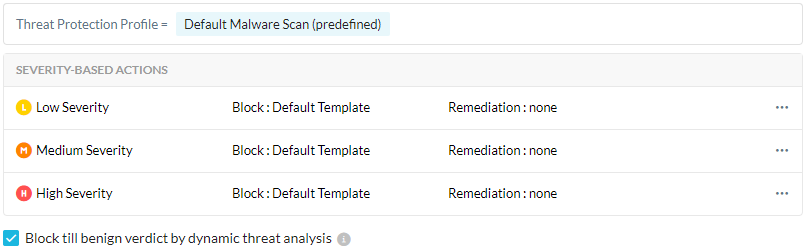Optionally, you may see the Set action for each profile checkbox. This option is visible based on your initial template selection. This is an optional feature to help you consolidate policies. If you have multiple DLP profiles in one policy, you can set an action for each profile.

Optionally, you may see the Continue policy evaluation after match checkbox.
This option is available when you select Alert as the action for one or more DLP profiles. When this option is enabled, the Add Traffic Action option is unavailable.
This feature allows the Netskope cloud to continue evaluating your policies after a policy match and detect additional DLP violations, instead of ending the evaluation after a match. If your policy includes multiple DLP profiles, this only applies to the profiles with the Alert action configured. When a match occurs for a profile with an action other than Alert, Netskope stops processing your policies.
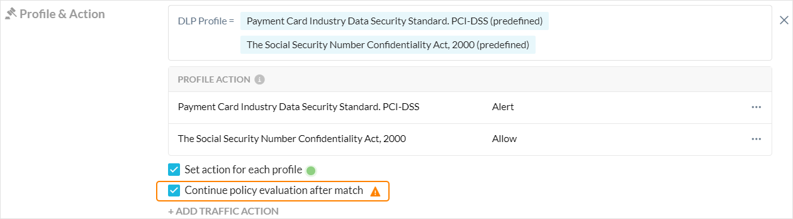Note
When the Continue policy evaluation after match option is enabled and multiple policy matches occur, the generated DLP incident lists all matched policies and DLP profiles.
The generated alert for the transaction uses the last matched policy as the Alert Name and lists all matched policies in the Policy Name field. The Action is the last matched policy’s configured action. If all matched policies’ actions are Alert (and Continue policy evaluation after match), then the Action is listed as None.
Optionally, you may see the Add Traffic Action button. This action allows you to consolidate a DLP policy and an access control (Cloud App Access, Web Access, or Private App Access) policy that have the same traffic criteria. When the traffic criteria matches but the DLP profile does not, the traffic action will be taken.

Optionally, you can edit or remove your Profile & Action. Click the pencil icon or the three dots to the far right of the profile name.

Enter a name and a description.
Important
When creating policy names, only use alphanumeric characters and symbols such as "_" underscore, "-" dash, and "[ or ]" square brackets. You cannot use the greater than ">" and less than "<" symbols in policy names.
Select an Email Notification. Select the notification frequency. Choose None if you don't want an email notification about the policy violation and the resulting action. When you choose 'Every,' you can select the frequency of the email notifications from the dropdown list – 30 Mins, 60 Mins, 6 Hours, 24 Hours. Or, choose to notify 'After each event.'
Select the User, Admin, or Users to be notified. You can use the default email template or create a new template. Optionally, you can specify the an email address that will appear as the sender in the email notification. Wen finished, click Done to save your email notification setting and exit the window.

Optionally, you can enable a time based policy schedule. See the Time Based Policies topic for details. If you do not see this option, contact Support to enable it in your account.
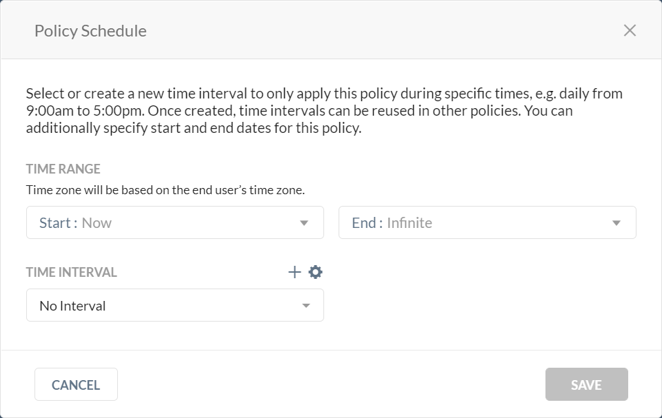If a policy schedule is configured, you will see a clock
 icon beside the policy name in the Policy list page.
icon beside the policy name in the Policy list page.If a time range has expired, you will see a grayed out clock icon and policy name. The policy is still enabled but it requires your attention. In both cases, you can hover over the clock icon for details.
Click Save in the upper right corner to save your new policy. You should see it in the Policy list page.
Real-time Protection Policy Variables
The following variables can be defined for an Real-time Protection policy. You can use a variety of variables in a policy. If a variable is not used in the policy, it is defined as Any.
Variable | Description |
|---|---|
Users | Users created manually in the UI or Active directory users that are automatically populated from the enterprise AD server. |
User Groups | These are the Active Directory (AD) groups that are automatically populated to the Netskope cloud from the Enterprise AD server. Specifying user groups in a policy requires installing the Netskope AD adapter on a server that is part of your domain in order to export the AD user group names. |
Organizational Unit | This information is obtained from the exported AD groups. Specifying organizational units in a policy requires installing the Netskope AD adapter on a server that is part of your domain in order to export the AD organizational unit names. |
Cloud Apps + Web | Cloud app variables include:
|
Cloud Confidence Index Level (CCI Level) | A CCI Level can be applied when certain app categories, like Application Suite, are chosen. CCI measures the enterprise readiness of the cloud apps taking into consideration their security, auditability, and business continuity. Each app is assigned a score of 0-100, and based on the score, placed into one of five cloud confidence levels: Excellent, High, Medium, Low, or Poor. CCI can be used as a matching criteria in the policy. For example, you can choose to not let users share content in cloud storage apps rated Medium or below. |
DLP Profile | A data loss prevention (DLP) profile detects violations like PCI (which identifies credit card information). DLP profiles and rules can be configured in Policies > DLP. |
Threat Protection Profile | A threat protection profile detects malware files and malicious sites. Threat protection profiles can be configured in Settings > Threat Protection. |
Activities | The Netskope content analytics engine performs deep API inspection to detect a specific cloud app and also to extract the relevant information about the activities performed with that app. It can detect if the user downloads a file, uploads a file, shares a file, and also detects the file name, and so on. Today the Netskope engine can detect 41,000+ apps and can track 80+ activities. |
Constraints | What the user is allowed to do for that specific activity (like allowed to share only within the organization). Constraints are shown only for the activities that support each constraint. Constraint profiles are defined in Policies > Profiles > Constraints. Refer to Profiles for details on configuring constraints profiles. |
Additional Attributes | These optional variables detect the following:
|
Action | Action taken when a violation is detected: NoteNetskope matches a Real-time Protection policy with a SSL Do Not Decrypt policy when the Real-time Protection policy’s Action is Block, User Alert, Allow, or Alert. Contact your sales team to enable policy matching when the Real-time Protection policy’s Action is Alert.
|